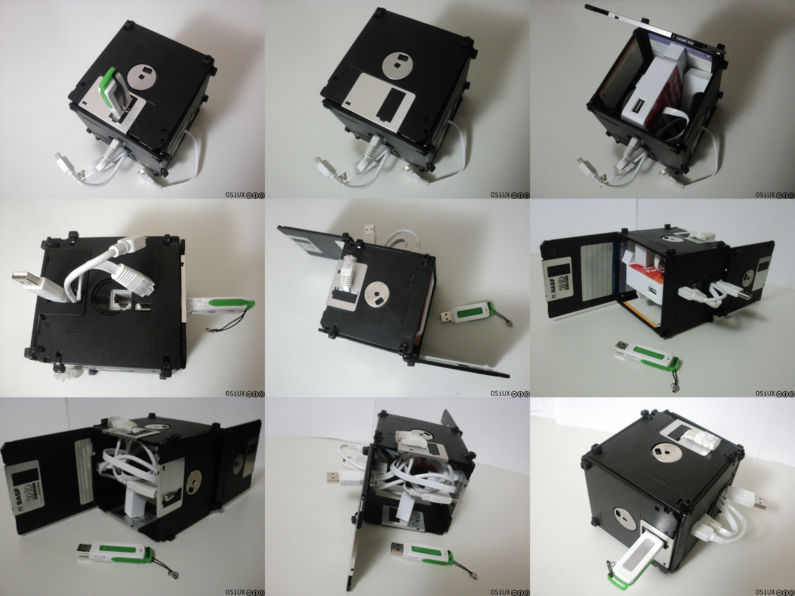
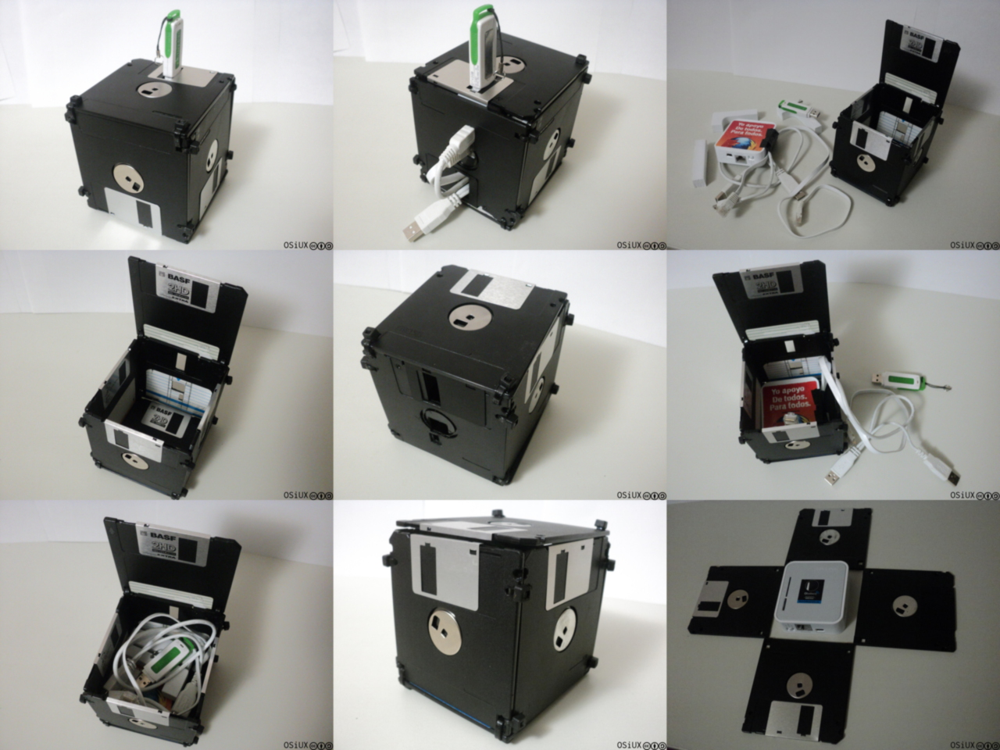

PirateBox PirateFloppy
ABSOLUTELLY NO WARRANTY | CC-BY-SA | OSiUX | .git
PirateBox 1 es un proyecto para compartir archivos usando un router WiFi, en mi caso estoy usando un TPLink MR3020 2 y viendo qué usar como caja se me ocurrió usar diskettes también conocidos como floppy.
Hoy en día los más jóvenes comparten mediante Internet y otras redes casi exclusivamente y en menor medida usan pendrives, en mis inicios informáticos mi primer computadora no tenía disco rígido, sólo una disketera de 5.25" y usar diskettes para intercambiar programas era el único método, no habían redes.
Asi que me parece muy afortunado contener al PirateBox mediante un PirateFloppy ! :-)

Es muy fácil de armar, sólo hacen falta 6 diskettes de 3.5" y unos cuantos precintos para unirlos. El lado donde esta el conector power y el RJ45 fue el único disco que tuve que abrir para quitar el centro metálico y hacer unos cortes con un cutter para que los conectores queden bien. Dejé dos caras del cubo con sólo 2 precintos de un lado a modo de bisagra para que se pueda abrir fácilmente.

Aproveché el deslizador metálico e hice un corte al disco para insertar el pendrive usb y también para que pasen los cables.
El MR3020 no esta fijo, simplemente queda en su lugar por la conexión de los cables y el pendrive usb, use la goma original cortada para hacer algo de presion.
No utilice pegamento, asi que todo está unido por precintos y es adaptable, para un router más grande se podrían usar más diskettes.
Sean creativos reciclando y no olviden que compartir es bueno.